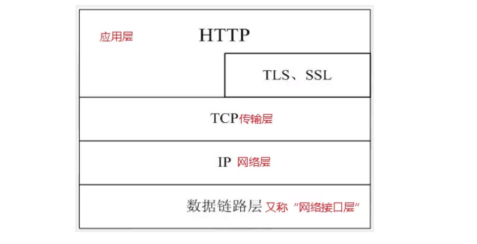
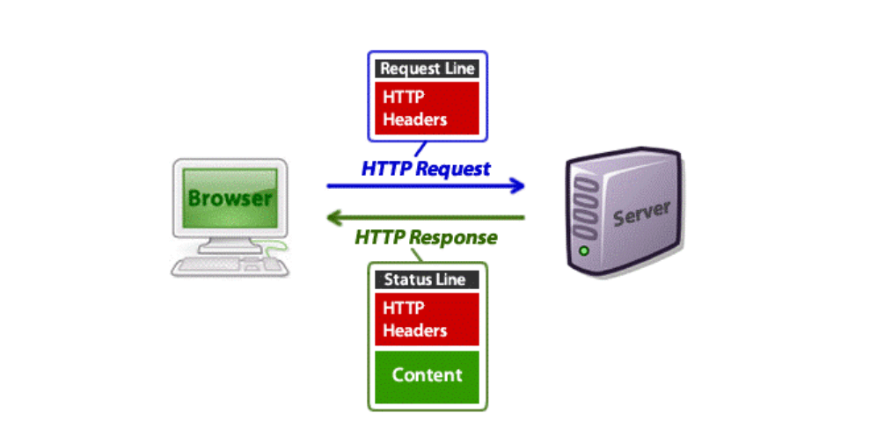
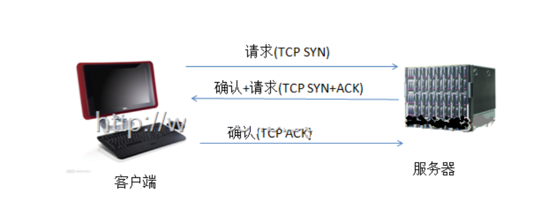
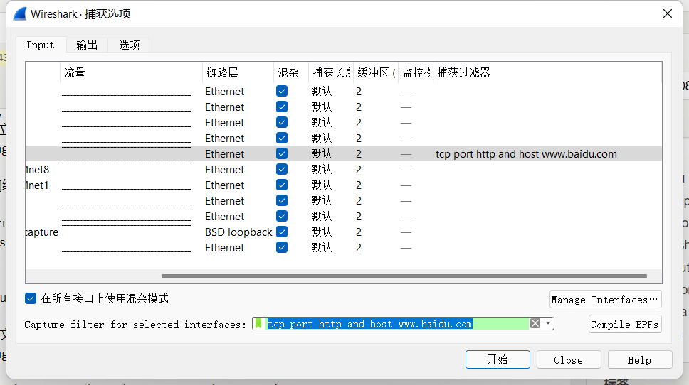
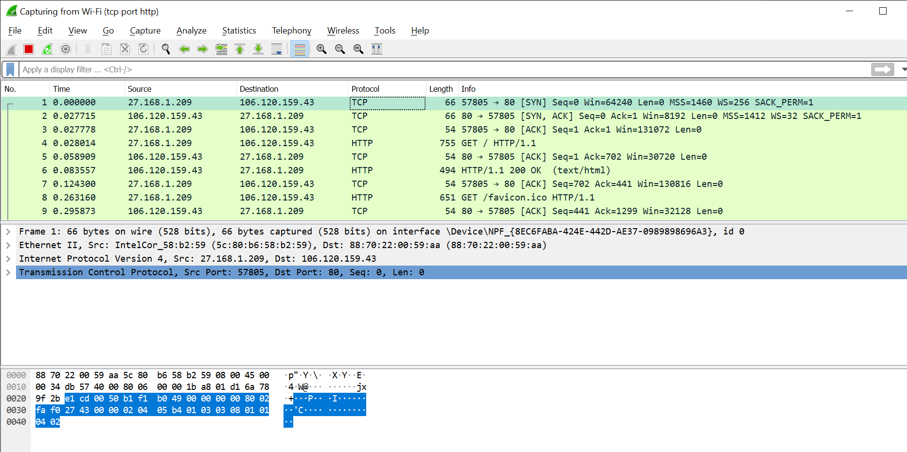
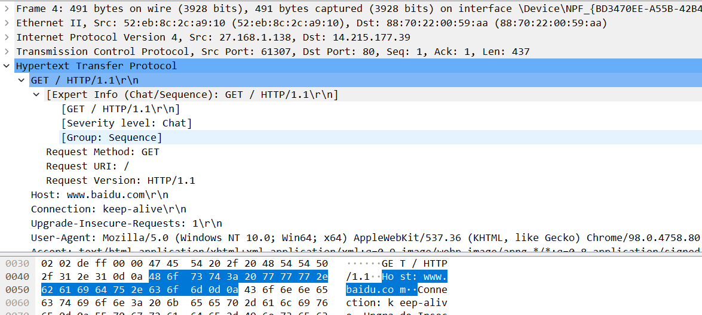
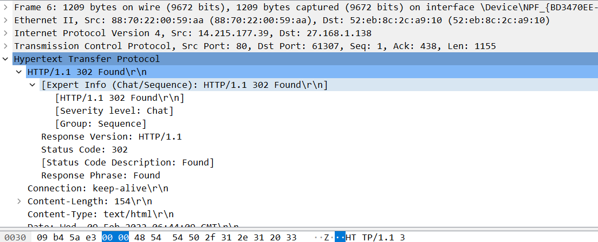
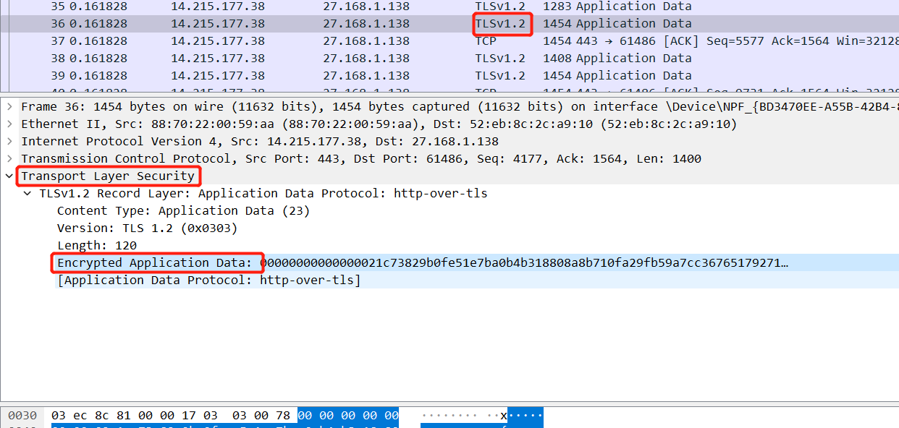
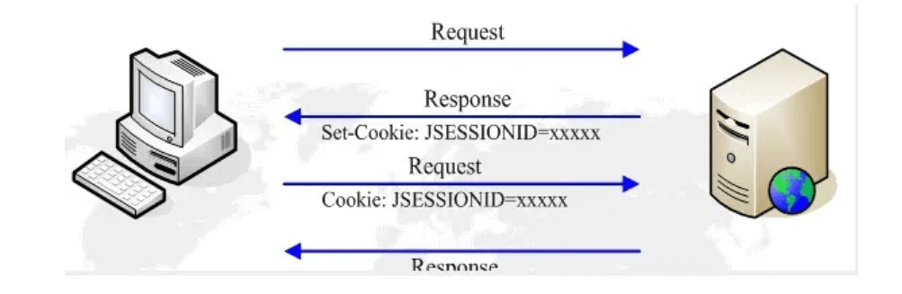

这篇文章上次修改于 604 天前，可能其部分内容已经发生变化，如有疑问可询问作者。
The Hypertext Transfer Protocol (HTTP) is an application protocol for distributed, collaborative, hypermedia information systems.[1] HTTP is the foundation of data communication for the World Wide Web, where hypertext documents include hyperlinks to other resources that the user can easily access, for example by a mouse click or by tapping the screen in a web browser.
以上说明摘录自 Wikipedia，HTTP 全称为超文本传输协议，设计HTTP最初的目的是为了提供一种发布和接收HTML页面的方法。通过HTTP或者HTTPS协议请求的资源由统一资源标识符（Uniform Resource Identifiers，URI）来标识。
构成
HTTP是一个客户端（用户）和服务端（网站）之间请求和应答的标准，通常使用TCP协议。有时也承载于TLS或SSL协议层之上，这个时候，就成了我们常说的HTTPS：

HTTP协议永远都是客户端发起请求，服务器回送响应。

HTTP是一个无状态的协议。协议对于事务处理没有记忆能力，服务器不知道客户端是什么状态。从另一方面讲，打开一个服务器上的网页和你之前打开这个服务器上的网页之间没有任何联系。可以使用 connection: Keep-Alive 来保留 tcp 握手连接。
一次HTTP操作称为一个事务，其工作过程可分为四步：
- 首先客户机与服务器需要建立连接。只要单击某个超级链接，HTTP的工作开始。
- 建立连接后，客户机发送一个请求给服务器，请求方式的格式为：统一资源标识符（URI）、协议版本号，后边是MIME信息包括请求修饰符、客户机信息和可能的内容。
- 服务器接到请求后，给予相应的响应信息，其格式为一个状态行，包括信息的协议版本号、一个成功或错误的代码，后边是MIME信息包括服务器信息、实体信息和可能的内容。
- 客户端接收服务器所返回的信息通过浏览器显示在用户的显示屏上，然后客户机与服务器断开连接。
HTTP是基于传输层的TCP协议，而TCP是一个端到端的面向连接的协议。所谓的端到端可以理解为进程到进程之间的通信。所以HTTP在开始传输之前，首先需要建立TCP连接，而TCP连接的过程需要三次握手：

可以使用 Wireshark 网络协议分析工具来查看一个握手过程：https://www.wireshark.org/
打开 Wireshark，点击 capture - options，上方选择当前连接外网的硬件，我选择 WiFi，在 capture filter 里设置监听地址：tcp port http and host www.baidu.com:

在浏览器访问：http://baidu.com，注意是 http 页面，记得如果使用了代理的话先关掉。
在 wireshark 里就会显示报文信息：

可以通过颜色区分报文种类，绿色是 tcp 报文，黑色是有问题的报文。如果报文过多可以使用上面的 filter 过滤有用信息。
上面的报文显示了握手的过程：
- 前三个 tcp 连接分别是客户端发出连接请求，服务端回应客户端，客户端回应服务端确认
- 然后客户端发起一个 http 页面 request 请求
- 服务端发出 tcp 确认请求
- 服务端发送 response http 数据 200 状态码
- 客户端发出 tcp 确认
点击客户端发起的 http 请求，在其中的 Hypertext Transfer Protocol 栏可以看到请求信息：

点击服务端返回的 http 响应，在其中的 Hypertext Transfer Protocol 栏可以看到响应信息：

如果访问的是 https 页面，则没有以上 http 响应栏，而是 TLS 响应，对应其中的 Transport Layer Security 菜单栏可以查看信息，不过其中的数据是加密过的：

下面主要分析 request 和 response 的 http 数据。
request 请求
tcp 握手成功后，客户端就通过发送 request 开始请求 http 页面。
发出的请求信息（message request）结构如下:
- 请求行（例如GET /images/logo.gif HTTP/1.1，表示从/images目录下请求logo.gif这个文件）
- 请求头（例如Accept-Language: en）
- 空行
- 其他消息体
请求行和标题必须以<CR><LF>作为结尾。空行内必须只有<CR><LF>而无其他空格。在HTTP/1.1协议中，所有的请求头，除Host外，都是可选的。
一个最简单的 request：
GET / HTTP/1.1
Host: www.bing.com末尾有一个空行。第一行指定方法、资源路径、协议版本；第二行是在1.1版里必带的一个header作用于指定主机。
上面访问 http://baidu.com 的request 全部内容如下：(在 wireshark 点击 request http 报文可查看)
GET / HTTP/1.1\r\n
Host: news.baidu.com\r\n
Connection: keep-alive\r\n
Upgrade-Insecure-Requests: 1\r\n
DNT: 1\r\n
User-Agent: Mozilla/5.0 (Windows NT 10.0; Win64; x64) AppleWebKit/537.36 (KHTML, like Gecko) Chrome/80.0.3987.149 Safari/537.36\r\n
Accept: text/html,application/xhtml+xml,application/xml;q=0.9,image/webp,image/apng,*/*;q=0.8,application/signed-exchange;v=b3;q=0.9\r\n
Referer: https://www.baidu.com/\r\n
Accept-Encoding: gzip, deflate\r\n
Accept-Language: en,en-US;q=0.9,zh-CN;q=0.8,zh;q=0.7,zh-TW;q=0.6\r\n
Cookie: BIDUPSID=DFBCEB19126518FE5B14DE02435939DF; PSTM=1585012306; BAIDUID=DFBCEB19126518FEC81AB23A0B7A652F:FG=1; H_PS_PSSID=30971_1426_31118_21108_30824_26350\r\n
\r\n
[Full request URI: http://news.baidu.com/]
[HTTP request 1/3]
[Response in frame: 23]
[Next request in frame: 599]请求方法
HTTP/1.1协议中共定义了八种方法（也叫“动作”）来以不同方式操作指定的资源：
- GET 向指定的资源发出“显示”请求。使用GET方法应该只用在读取数据，GET上要在url之外带一些参数就只能依靠url上附带querystring。
- HEAD 与GET方法一样，都是向服务器发出指定资源的请求。只不过服务器将不传回资源的本文部分。
- POST 向指定资源提交数据，请求服务器进行处理（例如提交表单或者上传文件）。数据被包含在请求本文中。
- PUT 向指定资源位置上传其最新内容。
- DELETE 请求服务器删除Request-URI所标识的资源。
- TRACE 回显服务器收到的请求，主要用于测试或诊断。
- OPTIONS 这个方法可使服务器传回该资源所支持的所有HTTP请求方法。
- CONNECT HTTP/1.1协议中预留给能够将连接改为管道方式的代理服务器。通常用于SSL加密服务器的链接。
当某个请求所针对的资源不支持对应的请求方法的时候，服务器应当返回状态码405（Method Not Allowed），当服务器不认识或者不支持对应的请求方法的时候，应当返回状态码501（Not Implemented）。
最常用的就是 GET 和 POST 方法。
GET和POST的区别：
- GET提交的数据会放在URL之后，以?分割URL和传输数据，参数之间以&相连，如EditPosts.aspx?name=test1&id=123456. POST方法是把提交的数据放在HTTP包的Body中。
- GET提交的数据大小有限制，最多只能有1024字节（因为浏览器对URL的长度有限制），而POST方法提交的数据没有限制。
- GET方式需要使用Request.QueryString来取得变量的值，而POST方式通过Request.Form来获取变量的值。
- GET方式提交数据，会带来安全问题，比如一个登录页面，通过GET方式提交数据时，用户名和密码将出现在URL上，如果页面可以被缓存或者其他人可以访问这台机器，就可以从历史记录获得该用户的账号和密码。
版本
- HTTP/0.9 已过时。只接受GET一种请求方法，没有在通讯中指定版本号，且不支持请求头。不支持 POST
- HTTP/1.0 这是第一个在通讯中指定版本号的HTTP协议版本，至今仍被广泛采用，特别是在代理服务器中。
- HTTP/1.1 持久连接被默认采用，并能很好地配合代理服务器工作。还支持以管道方式在同时发送多个请求，降低线路负载提高传输速度。
- HTTP/2 当前版本，于2015年5月作为互联网标准正式发布。
请求头
HTTP 头字段根据实际用途被分为以下 4 种类型：
- 通用头字段(英语：General Header Fields)
- 请求头字段(英语：Request Header Fields)
- 响应头字段(英语：Response Header Fields)
- 实体头字段(英语：Entity Header Fields)
常见的请求头字段：
- Accept 能够接受的回应内容类型：Accept: text/plain
- Connection 该浏览器想要优先使用的连接类型：Connection: keep-alive
- Content-Type 请求体的多媒体类型：Content-Type: application/x-www-form-urlencoded
- Host 服务器的域名(用于虚拟主机 )，以及服务器所监听的传输控制协议端口号：Host: en.wikipedia.org:80
- User-Agent - 浏览器的浏览器身份标识字符串：ser-Agent: Mozilla/5.0 (X11; Linux x86_64; rv:12.0) Gecko/20100101 Firefox/21.0
- If-Modified-Since 把浏览器端缓存页面的最后修改时间发送到服务器，如果和服务器文件时间一致，那么返回304：If-Modified-Since: Thu, 09 Feb 2012 09:07:57 GMT
- pragma 指定“no-cache”值表示服务器必须返回一个刷新后的文档，即使它是代理服务器而且已经有了页面的本地拷贝，在HTTP/1.1版本中，它和Cache-Control: no-cache作用一模一样：pragma: no-cache
- Cache-Control 指定请求和响应遵循的缓存机制：Cache-Control: no-cache
- Cookie 之前由服务器通过 Set- Cookie （下文详述）发送的一个 超文本传输协议Cookie
常见的非标准请求头字段：
- DNT 请求某个网页应用程序停止跟踪某个用户：DNT: 1 (DNT启用)
- X-Forwarded-For 一个事实标准 ，用于标识某个通过超文本传输协议代理或负载均衡连接到某个网页服务器的客户端的原始互联网地址：X-Forwarded-For: 129.78.138.66, 129.78.64.103
- X-Forwarded-Host 一个事实标准 ，用于识别客户端原本发出的 Host 请求头部：X-Forwarded-Host: en.wikipedia.org
- X-Forwarded-Proto 一个事实标准，用于标识某个超文本传输协议请求最初所使用的协议：X-Forwarded-Proto: https
更多请求头字段参考：wikepedia
response 响应
服务端发出 tcp 确认后，发出 response 响应 http 页面。
发出的响应信息（message request）结构如下:
- 状态行（例如HTTP/1.1 200 OK，表示从信息传递成功）
- 响应头（例如Content-Length: 3059）
- 空行
- 传递实体内容(可以为空)
下面是一个 http 页面的响应实例：
HTTP/1.1 200 OK\r\n
Content-Type: text/html; charset=utf-8\r\n
Server: GitHub.com\r\n
Last-Modified: Fri, 22 Jan 2016 02:52:30 GMT\r\n
ETag: W/"56a1996e-2d27"\r\n
Access-Control-Allow-Origin: *\r\n
Expires: Tue, 24 Mar 2020 06:32:29 GMT\r\n
Cache-Control: max-age=600\r\n
Content-Encoding: gzip\r\n
X-Proxy-Cache: MISS\r\n
X-GitHub-Request-Id: EAD6:198D:D9A2C:E5FDD:5E79A724\r\n
Content-Length: 4509\r\n
Accept-Ranges: bytes\r\n
Date: Tue, 24 Mar 2020 06:22:29 GMT\r\n
Via: 1.1 varnish\r\n
Age: 0\r\n
Connection: keep-alive\r\n
X-Served-By: cache-hnd18730-HND\r\n
X-Cache: MISS\r\n
X-Cache-Hits: 0\r\n
X-Timer: S1585030950.603621,VS0,VE171\r\n
Vary: Accept-Encoding\r\n
X-Fastly-Request-ID: 806211821134676c48d8c7c6ed9cee2a6bad952d\r\n
\r\n
[HTTP response 1/5]
[Time since request: 0.405424000 seconds]
[Request in frame: 2595]
[Next request in frame: 2604]
[Next response in frame: 2623]
[Request URI: http://zq210wl.github.io/imgs/noise.png]
Content-encoded entity body (gzip): 4509 bytes -> 11559 bytes
File Data: 11559 bytes
<!DOCTYPE HTML>
<html>
<head>
<meta charset="utf-8">
...
</head>
<body>
...
</body>状态行
响应行结构为：当前HTTP版本号，3位数字组成的状态代码，以及描述状态的短语，彼此由空格分隔。
状态码
状态代码的第一个数字代表当前响应的类型：
- 1xx消息——请求已被服务器接收，继续处理
- 2xx成功——请求已成功被服务器接收、理解、并接受
- 3xx重定向——需要后续操作才能完成这一请求
- 4xx请求错误——请求含有词法错误或者无法被执行
- 5xx服务器错误——服务器在处理某个正确请求时发生错误
详细的状态码介绍参考：https://blog.niekun.net/archives/192.html
响应头
HTTP 头字段根据实际用途被分为以下 4 种类型：
- 通用头字段(英语：General Header Fields)
- 请求头字段(英语：Request Header Fields)
- 响应头字段(英语：Response Header Fields)
- 实体头字段(英语：Entity Header Fields)
常见的响应头字段：
- Allow 对于特定资源有效的动作：Allow: GET, HEAD
- Age 这个对象在代理缓存中存在的时间，以秒为单位：Age: 12
- Connection 针对该连接所预期的选项：Connection: keep-alive
- Content-Language 内容所使用的语言：Content-Language: da
- Expires 指定一个日期/时间，超过该时间则认为此回应已经过期：Expires: Thu, 01 Dec 1994 16:00:00 GMT
- Location 用来进行重定向，或者在创建了某个新资源时使用：Location: http://www.w3.org/pub/WWW/People.html
- Refresh 用于设定可定时的重定向跳转。右边例子设定了5秒后跳转至：Refresh: 5; url=http://www.w3.org/pub
- Server服务器的名字：Server: Apache/2.4.1 (Unix)
- Upgrade 要求客户端升级到另一个协议：Upgrade: HTTP/2.0
- Set-Cookie 设置 HTTP cookie记录客户端身份：Set-Cookie: UserID=JohnDoe; Max-Age=3600; Version=1
常见的非标准回应字段：
- X-Powered-By 表明用于支持当前网页应用程序的技术：X-Powered-By: PHP/5.4.0
- X-Content-Duration 指出音视频的长度，单位为秒：X-Content-Duration: 42.666
详细的响应头字段参考：Wikipedia
响应头的 location 段
HTTP Location 是在两种情况使用在响应头中：
- 要求网页浏览器加载其他网页(域名转址)。在这种情况下，应该使用HTTP状态码3xx发送Location头。
- 提供有关新创建资源位置的信息。在这种情况下，应该使用HTTP状态码201或202发送Location头。
示例：
HTTP/1.1 302 Found
Location: http://www.example.org/index.php客户端请求的 URL 被服务端重定向到 http://www.example.org/index.php.
客户端请求：
GET /blog HTTP/1.1
Host: www.example.com服务端响应：
HTTP/1.1 302 Found
Location: /articles/该位置 /blog 被客户端定向到 http://www.example.com/articles/.
解决HTTP无状态的问题
使用Cookie来实现：
- 服务器给每个Session分配一个唯一的JSESSIONID，并通过Cookie发送给客户端。
- 当客户端发起新的请求的时候，将在Cookie头中携带这个JSESSIONID。这样服务器能够找到这个客户端对应的Session。

使用URL回写来实现：
URL回写是指服务器在发送给浏览器页面的所有链接中都携带JSESSIONID的参数，这样客户端点击任何一个链接都会把JSESSIONID带会服务器。如果直接在浏览器输入服务端资源的url来请求该资源，那么Session是匹配不到的。
URI 统一资源标志符
统一资源标识符（英语：Uniform Resource Identifier，缩写：URI）在电脑术语中是一个用于标识某一互联网资源名称的字符串。
该种标识允许用户对网络中（一般指万维网）的资源通过特定的协议进行交互操作。URI的最常见的形式是统一资源定位符（URL），经常指定为非正式的网址。更罕见的用法是统一资源名称（URN），其目的是通过提供一种途径。用于在特定的名字空间资源的标识，以补充网址。
通用URI的格式如下：
[协议名]://[用户名]:[密码]@[主机名]:[端口]/[路径]?[查询参数]#[片段ID]下面是两个常见的 URI 构成：
hierarchical part
┌───────────────────┴─────────────────────┐
authority path
┌───────────────┴───────────────┐┌───┴────┐
abc://username:[email protected]:123/path/data?key=value&key2=value2#fragid1
└┬┘ └───────┬───────┘ └────┬────┘ └┬┘ └─────────┬─────────┘ └──┬──┘
scheme user information host port query fragment
urn:example:mammal:monotreme:echidna
└┬┘ └──────────────┬───────────────┘
scheme path以 https://zh.wikipedia.org:80/w/index.php?title=Special:随机页面#ABC 为例, 其中：
- https，是协议；
- zh.wikipedia.org，是服务器；
- 80，是服务器上的网络端口号；
- /w/index.php，是路径；
- ?title=Special:随机页面，是询问。
- \#ABC，是片段
只有一条评论 (QwQ)
绝对硬核。好功夫。